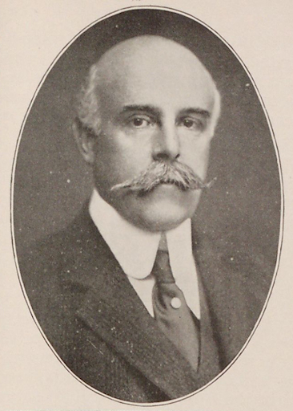
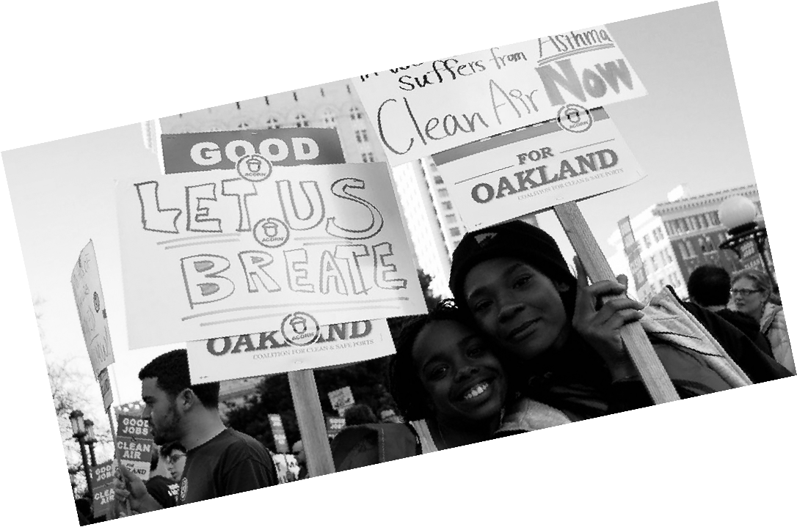
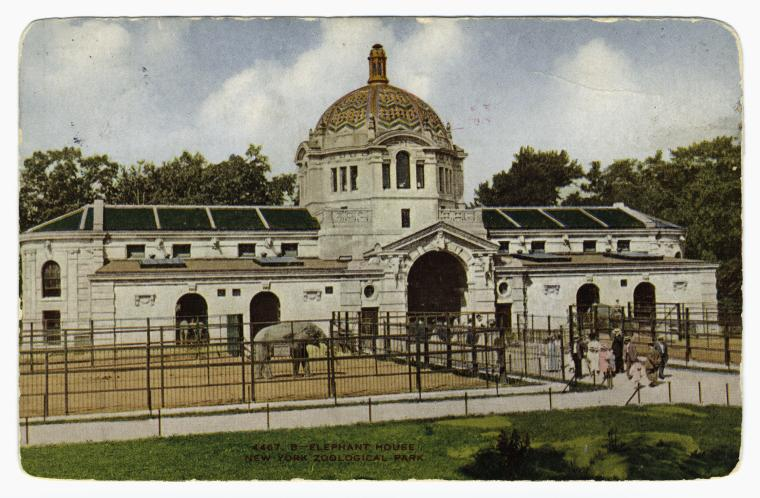

I’m that default chill speed of "-2"
Madison Grant (Yale College 1887, Columbia Law School) liked to be photographed with a fedora, or just his dauntingly long head, tilted about thirty degrees to the right. He belonged, like his political ally Teddy Roosevelt, to a Manhattan aristocracy defined by bloodline and money. But Grant, like many young men of his vintage, felt duty-bound to do more than enjoy his privilege. He made himself a credible wildlife zoologist, was instrumental in creating the Bronx Zoo, and founded the first organizations dedicated to preserving American bison and the California redwoods.
On March 24, 1897, Mayor William Strong granted a tract of South Bronx Park to Madison Grant and his New York Zoological Society, which was supported by the wealthiest New Yorkers, including Andrew Carnegie, Jacob Schiff, William Vanderbilt, and William C. Whitney. Grant selected William Temple Hornaday, at that time the most famous conservationist in America, as the zoo’s director; Hornaday had recently resigned from his post as director of the National Zoo in Washington, D.C.
Grant and Hornaday hoped that the Bronx Zoo would be a primary refuge for North American animals threatened by the ceaseless waves of the tired and the poor that Emma Lazarus had welcomed to their shores. In “The Destruction of Our Birds and Mammals,” Hornaday wrote that “the state of Florida, with its once wonderfully rich bird life, has been swept almost as clean of birds as is the Colorado desert,” adding that “unless much more radical and much more general protective measures are taken forthwith, the next fifteen years will witness the total annihilation within the United States of practically all our birds, except the warblers and sparrows, and all our wild quadrupeds, save the rabbits…” Among the culprits Hornaday named were gunners, sportsmen, idlers, market hunters, plume hunters, boys, farmers, egg collectors, and the colored population of America.
In addition to his work at the zoo, Grant also spearheaded notable campaigns to preserve bison, redwoods, whales, and bald eagles, and to create Glacier and Denali National Parks in Alaska, efforts that led him to be generally credited as one of the fathers of the conservation movement in America. Since Grant appears in the Zoological Society’s records as a controlling presence from the date of its founding in 1895 until his death in 1937, on the eve of the Second World War, the placement of his portrait in a restricted space—and apparently nowhere else in the zoo—is puzzling.
For Grant, Roosevelt, and other architects of the country’s parks and game refuges, wild nature was worth saving for its aristocratic qualities; where these were lacking, they were indifferent. Grant, as his Times obituary noted, “was uninterested in the smaller forms of animal or bird life.” He wrote about the moose, the mountain goat, and the redwood tree, whose nobility and need for protection in a venal world so resembled the plight of Grant’s “Nordics” that his biographer, Jonathan Spiro, concludes that he saw them as two faces of a single threatened, declining aristocracy. Similarly, Roosevelt, in his accounts of hunting, could not say enough about the “lordly” and “noble” elk and buffalo that he and Grant helped to preserve, and loved to kill. Their preservation work aimed to keep alive this kind of encounter between would-be aristocratic men and halfway wild nature.
In The Origin and Relationship of the Large Mammals of North America, published in 1904, Grant began to expand his arguments about endangered animal populations in order to arrive at some more general maxims that might also be applied to humans. While not all North American animals came from the Old World, Grant noted, “the predominating types undoubtedly did.” In order to save as much as possible of the old America, he wrote in a letter to Hornaday, it was necessary to obtain “absolutely pure full blooded stock.” He further emphasized in a letter to another colleague, “It is of the utmost importance to preserve all remnants of the American bison without any cross-breeding.”
Grant promoted his version of applied racism through his own writings, as well as through a spidery network of research programs sponsored by major American foundations and universities. These programs, run by the country’s leading scientists and promoted by some of its most powerful legislators, had a decisive and entirely regrettable influence on the racial attitudes and immigration laws of 1920s and ‘30s America.
having read the passing of the great race in germany, adolf hitler wrote to grant, proclaiming, “the book is my bible,” a sentiment that was shared by many of the leading intellectuals and scientists of the third reich.
Grant also served as a primary conduit between American eugenicists and their colleagues in Europe. Having read The Passing of the Great Race in Germany, Adolf Hitler wrote to Grant, proclaiming, “The book is my Bible,” a sentiment that was shared by many of the leading intellectuals and scientists of the Third Reich, who expressed Grant’s vision in ever-more-horrifying forms. The suggestion that any connection exists between Madison Grant’s murderous racial theories and his conservationist achievements would appall any gentle-minded environmentalist of today. Yet the connection is clearly there.
Roosevelt put Gifford Pinchot in charge of the National Conservation Commission, and made him head of the new Forest Service, but he also cultivated the Romantic naturalist John Muir, who founded the Sierra Club in 1892. In the Sierra Club’s early leaders, the environmental movement has some less troubling ancestors. Following Muir, whose bearded face and St. Francis-like persona were as much its icons as Yosemite Valley, the club adopted the gentle literary romanticism of Thoreau, Emerson, and Wordsworth. The point of preserving wild places, for these men—and, unlike in Roosevelt’s circles, some women—was to escape the utilitarian grind of lowland life and, as Muir wrote, to see the face of God in the high country.
But Muir, who felt fraternity with four-legged “animal people” and even plants, was at best ambivalent about human brotherhood. Describing a thousand-mile walk from the Upper Midwest to the Gulf of Mexico, he reported the laziness of “Sambos.” Later he lamented the “dirty and irregular life” of Indians in the Merced River valley, near Yosemite. In “Our National Parks,” a 1901 essay collection written to promote parks tourism, he assured readers that, “As to Indians, most of them are dead or civilized into useless innocence.” This might have been incisive irony, but in the same paragraph Muir was more concerned with human perfidy toward bears (“Poor fellows, they have been poisoned, trapped, and shot at until they have lost confidence in brother man”) than with how Native Americans had been killed and driven from their homes.
Even as environmentalism took on big new problems in the seventies, it also seemed to promise an escape hatch from continuing crises of inequality, social conflict, and, sometimes, certain kinds of people. Time described the environmental crisis as a problem that Americans “might actually solve, unlike the immensely more elusive problems of race prejudice or the war in Vietnam.” In his 1970 State of the Union address, in which he expended less than a hundred words on Vietnam, made no explicit reference to race, and yet launched a new racialized politics with calls for a “war” on crime and attacks on the welfare system, Richard Nixon spent almost a thousand words on the environment, which he called “a cause beyond party and beyond factions.” That meant, of course, that he thought it could be a cause for the white majority.
Environmentalism largely was that. When the Sierra Club polled its members, in 1972, on whether the club should “concern itself with the conservation problems of such special groups as the urban poor and ethnic minorities,” forty per cent of respondents were strongly opposed, and only fifteen per cent were supportive. (The phrasing of the question made the club’s bias clear enough.) Admitting to its race problem took the movement nearly two decades. In 1987, the United Church of Christ’s Commission for Racial Justice published an influential report that found that hazardous waste facilities were disproportionately located in minority communities, and called this unequal vulnerability “a form of racism.” The environmental movement, the report observed, “has historically been white middle and upper-class.”
Three years later, activists sent a letter to the heads of major environmental organizations, claiming that non-whites were less than two per cent of the combined seven hundred and forty-five employees of the Audubon Society, Sierra Club, Natural Resources Defense Council (N.R.D.C.), and Friends of the Earth. Fred Krupp, then executive director of the Environmental Defense Fund, replied with a mea culpa: “Environmental groups have done a miserable job of reaching out to minorities.”
Since then, “environmental racism” and “environmental justice” have entered the vocabulary of the movement. There are many environmentalisms now, with their own constituencies and commitments. In the Appalachian coalfields, locals fight the mountaintop-removal strip mining that has shattered peaks and buried more than a thousand miles of headwater streams. Activists from working-class Latino neighborhoods in Los Angeles have opposed parts of California’s landmark climate-change legislation, which the large environmental groups support, arguing that it gives poor communities too little protection from concentrated pollution.
Despite some such conflicts, large, well-resourced national groups such the Sierra Club and the Natural Resources Defense Council seek out these groups as partners in everything from environmental monitoring to lawsuits. Mitch Bernard, director of litigation at N.R.D.C., says, “It’s no longer a national group swooping down on a locale and saying this is what we think you should do. Much more of the impetus for action, and the strategies for action, come from the affected community.”
the priorities of the old environmental movement limit the effective legal strategies for activists today.
Still, the major environmental statutes, such as the Clean Air Act and the Clean Water Act, were written with no attention to the unequal vulnerability of poor and minority groups. The priorities of the old environmental movement limit the effective legal strategies for activists today. And activists acknowledge that persistent mistrust goes beyond immediate conflicts, such as the split over California’s climate-change law, but can make them more difficult to resolve. Bernard attributes some of the misgivings to environmentalism’s history as an élite, white movement. A 2014 study found that whites occupied eighty-nine per cent of leadership positions in environmental organizations.
Some of the awkwardness of environmental politics since the seventies, now even more acute in the age of climate change, is that it lays claim to worldwide problems, but brings to them some of the cultural habits of a much more parochial, and sometimes nastier, movement. Ironically enough, Madison Grant, writing about extinction, was right: the natural world that future generations live in will be the one we create for them. It can only help to acknowledge just how many environmentalist priorities and patterns of thought came from an argument among white people, some of them bigots and racial engineers, about the character and future of a country that they were sure was theirs and expected to keep.
